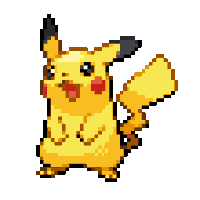
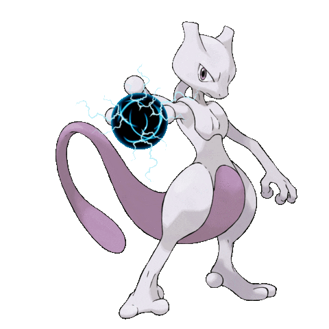
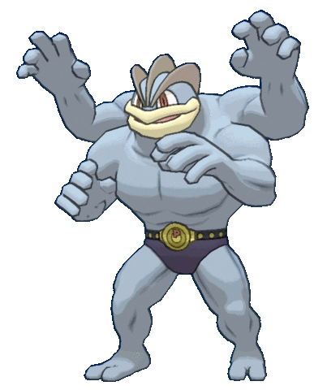
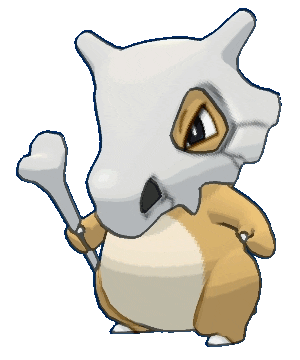
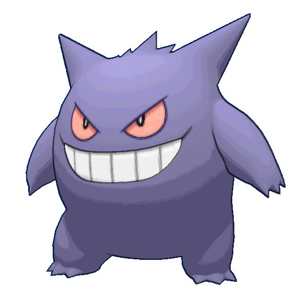

-
Pikachu #001
- Elétrico
Pikachu é um Pokémon elétrico adorado por sua aparência cativante e habilidades elétricas. Com suas bochechas brilhantes, ele armazena eletricidade e pode lançar poderosos ataques como "Thunderbolt" e "Thunder Shock".
-
mewtwo #002
- Psiquico
Mewtwo é um lendário Pokémon Psíquico com uma aparência imponente e misteriosa. Com sua pele roxa, olhos penetrantes e corpo musculoso, ele transmite poder e inteligência. Como um Pokémon do tipo Psíquico, Mewtwo possui habilidades avançadas, como ler mentes e lançar ataques psíquicos. Sua presença é considerada uma força incomparável e desafiadora para qualquer treinador que se atreva a enfrentá-lo.
-
machamp #003
- lutador
Machamp é um Pokémon poderoso e musculoso, conhecido por sua força e resistência impressionantes. Sua aparência robusta é destacada por seus quatro braços musculosos. Com um corpo tonificado e uma expressão determinada.
-
cubone #004
- terra
Cubone é um adorável Pokémon solitário e misterioso. Ele possui uma aparência peculiar, com uma máscara que cobre seu rosto e uma pele marrom-claro. Sua expressão triste e seus olhos grandes despertam empatia nos treinadores.
-
Gengar #005
- fantasma
Gengar é um Pokémon assombroso e travesso, conhecido por sua aparência sinistra e habilidades de fantasma. Sua forma sombria e esguia, com olhos vermelhos hipnotizantes e um sorriso malicioso, causa arrepios nos treinadores.
-
Charmander #006

- Fogo
Tem preferência por coisas quentes. Quando chove, diz-se que o vapor jorra da ponta de sua cauda.
-
Charizard #007

- Fogo
Ele cospe fogo que é quente o suficiente para derreter pedregulhos. Pode causar incêndios florestais soprando chamas.
-
Squirtle #008

- Água
Quando ele retrai seu longo pescoço em sua concha, ele esguicha água com força vigorosa.
-
Wartortle #009

- Água
É reconhecido como um símbolo de longevidade. Se sua concha tem algas, esse Wartortle é muito antigo.
-
Blastoise #010

- Água
Ele esmaga seu inimigo sob seu corpo pesado para causar desmaios. Em uma pitada, ele se retirará dentro de sua concha.